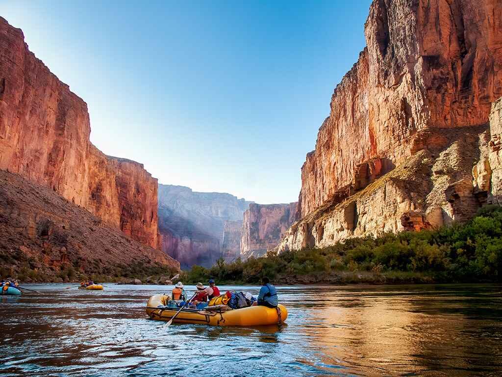

Hello! I'm Huzaifah Yunus, and this is my home page for the WDD130 course. Here you'll find information about my web development journey, including projects focused on white water rafting adventures. This course has taught me HTML, CSS, and web design principles that I'm excited to apply in creating engaging and functional websites.
